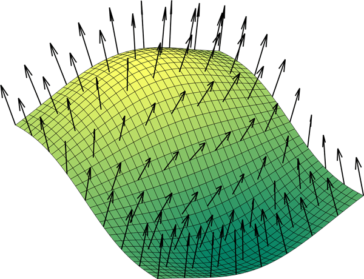
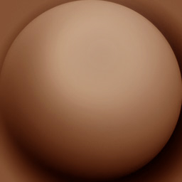
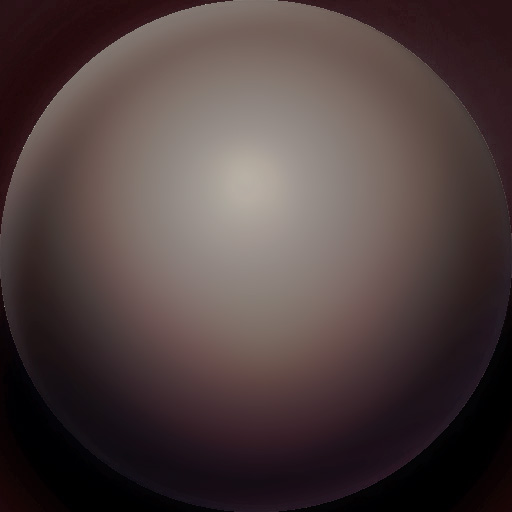
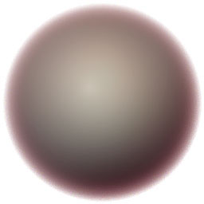
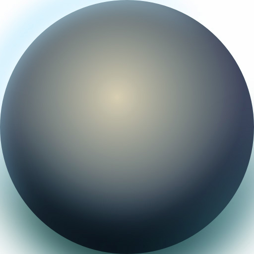
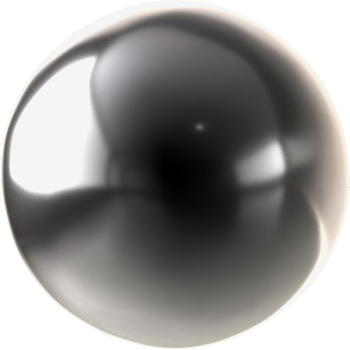

H2 - P2023
Développement web
Cours 12
- github : https://github.com/brunosimon/hetic-p2023
- site : http://bruno-simon.com/hetic/p2023/
- contact : bruno.simon@hetic.net
Materials
Sommaire
Pour définir quelle couleur doit être affichée pour chaque pixel visible d'une géométrie, le WebGL utilise des programmes appelés shaders qui sont envoyés à la carte graphique
Ces programmes sont écris en GLSL et sont difficile à créer soi-même
Heureusement, Three.js intègre des classes appelées Materials ayant des shaders préconçus
Jusqu'à présent, nous avons utilisé MeshBasicMaterial, mais il en existe de nombreux autres qui ont un résultat différent, qui peuvent réagir à la lumière et qui sont plus ou moins performant
Afin de mieux visualiser les materials, vous pouvez créer quelques objets de forme varier partageant le même material et les faire tourner
const material = new THREE.MeshBasicMaterial()
// Sphere
const sphere = new THREE.Mesh(new THREE.SphereGeometry(2, 16, 16), material)
sphere.position.x = - 6
scene.add(sphere)
// Plane
const plane = new THREE.Mesh(new THREE.PlaneGeometry(4, 4, 4, 4), material)
scene.add(plane)
// Torus Knot
const torusKnot = new THREE.Mesh(new THREE.TorusKnotGeometry(1.5, 0.5, 128, 16), material)
torusKnot.position.x = 6
scene.add(torusKnot)
/* ... */
const loop = () =>
{
/* ... */
// Update objects
sphere.rotation.y += 0.002
plane.rotation.y += 0.002
torusKnot.rotation.y += 0.002
/* ... */
}
/* ... */
Nous allons aussi utiliser des textures de porte dans nos materials
Celles-ci sont disponibles dans le pack textures.zip du cours précédent
/* ... */
import doorColorImageSource from './assets/images/door/color.jpg'
import doorAmbientOcclusionImageSource from './assets/images/door/ambientOcclusion.jpg'
import doorHeightImageSource from './assets/images/door/height.png'
import doorMetalnessImageSource from './assets/images/door/metalness.jpg'
import doorNormalImageSource from './assets/images/door/normal.jpg'
import doorAlphaImageSource from './assets/images/door/alpha.jpg'
import doorColorRoughnessSource from './assets/images/door/roughness.jpg'
import matcapSource from './assets/images/matcaps/1.jpg'
/* ... */
const textureLoader = new THREE.TextureLoader()
const doorColorTexture = textureLoader.load(doorColorImageSource)
const doorAmbientOcclusionTexture = textureLoader.load(doorAmbientOcclusionImageSource)
const doorHeightTexture = textureLoader.load(doorHeightImageSource)
const doorMetalnessTexture = textureLoader.load(doorMetalnessImageSource)
const doorNormalTexture = textureLoader.load(doorNormalImageSource)
const doorAlphaTexture = textureLoader.load(doorAlphaImageSource)
const doorColorRoughnessTexture = textureLoader.load(doorColorRoughnessSource)
const matcapTexture = textureLoader.load(matcapSource)
/* ... */
MeshBasicMaterial
Le MeshBasicMaterial est le plus simple des Materials
Il est capable d'afficher une couleur, une texture et peut aussi être transparent
const material = new THREE.MeshBasicMaterial({
map: doorColorTexture,
alphaMap: doorAlphaTexture,
transparent: true,
opacity: 0.8,
color: new THREE.Color(0x8888ff),
wireframe: false,
side: THREE.DoubleSide
})
| map | Texture (Color modifiera la teinte de la texture) |
THREE.Texture |
| alphaMap | Texture de transparence (blanc = visible, noir = invisible) | THREE.Texture |
| opacity | Opacité générale | float |
| transparent | Est-ce que le material est transparent (alphaMap et opacity ne fonctionneront pas si false) |
Boolean |
| color | Couleur générale | THREE.Color |
| wireframe | Affichage du maillage (utile pour debug) |
Boolean |
| side | Quelle face afficher | THREE.FrontSide, THREE.BackSide, THREE.DoubleSide |
Ces trois propriétés sont valables pour tous les materials, nous ne les répèterons pas
Toutes ces propriétés peuvent être modifiées en dehors de l'instanciation
const material = new THREE.MeshBasicMaterial()
material.map = doorColorTexture
material.alphaMap = doorAlphaTexture
material.transparent = true
material.opacity = 0.8
material.color = new THREE.Color(0x8888ff)
material.wireframe = false
material.side = THREE.DoubleSide
MeshNormalMaterial
Le MeshNormalMaterial affiche une couleur correspondant aux normals
Les normals sont des vecteurs 3D indiquant où se trouve l'extérieur de la fasse. Ils sont notamment utilisés pour gérer les lumières.

Nous utilisons ce material en général pour du debug
const material = new THREE.MeshNormalMaterial()
| map | Texture (Color modifiera la teinte de la texture) |
THREE.Texture |
MeshMatcapMaterial
Le MeshMatcapMaterial permet de simuler une texture en fonction de l'angle de la normal par rapport à la caméra
    
const material = new THREE.MeshMatcapMaterial({
matcap: matcapSourceTexture
})
| matcap | Texture de matcap | THREE.Texture |
Les matcaps sont très performantes et peuvent être crées dans un logiciel 3D ou directement dans un logiciel de retouche tel que Photoshop
Malheureusement, les ombres, lumières et reflet qui la compose ne sont pas en temps réel et feront toujours face à la caméra
Lights
Les materials qui suivent réagissent à la lumière
Nous allons donc rajouter une simple lumière à notre scène et nous verrons tout ce qu'il est possible de faire dans un prochain chapitre
Ajoutez une PointLight
const pointLight = new THREE.PointLight(0xffffff, 1, 10)
pointLight.position.x = 10
pointLight.position.y = 3
pointLight.position.z = 5
scene.add(pointLight)
MeshLambertMaterial
Le MeshLambertMaterial ressemble au MeshBasicMaterial mais avec gestion de l'éclairage
Il est très performant, mais ne gère pas les reflets de la lumière et si la géométrie n'est pas assez précise, on peut voir des artefacts
const material = new THREE.MeshLambertMaterial({
color: new THREE.Color(0xffffff)
})
MeshLambertMaterial possède plus de propriétés, mais nous les découvrirons dans les classes suivantes qui les gère aussi
MeshPhongMaterial
Le MeshPhongMaterial ressemble au MeshLambertMaterial, mais avec gestion des reflets de lumière, moins d'artefacts et moins performant
const material = new THREE.MeshPhongMaterial({
color: new THREE.Color(0xffffff),
shininess: 100,
specular: new THREE.Color(0x1188ff)
})
| shininess | Brillance | Float |
| specular | Couleur du reflet | THREE.Color |
MeshToonMaterial
Le MeshToonMaterial ressemble au MeshLambertMaterial, mais avec gestion des reflets de lumière, moins d'artefacts et moins performant
const toonGradient = textureLoader.load('https://threejs.org/examples/textures/gradientMaps/threeTone.jpg')
toonGradient.magFilter = THREE.NearestFilter
toonGradient.minFilter = THREE.NearestFilter
const material = new THREE.MeshToonMaterial({
color: new THREE.Color(0xffffff),
shininess: 100,
specular: new THREE.Color(0x1188ff),
gradientMap: toonGradient
})
| gradientMap | Dégradé permettant de définir le nombre d'étape dans le shading | THREE.Texture |
Exemple de dégradé
MeshStandardMaterial
Le MeshStandardMaterial est le nouveau standard pour les matériaux, pas seulement dans Three.js mais aussi dans de nombreux logiciels tels que Unreal Engine, Blender, Unity, etc.
Physically based correspond à une volonté de baser les paramètres d'une entité sur des valeurs physique proche de la réalité. Cela s'applique aux Materials, mais vous pouvez aussi retrouvez ça dans d'autres domaines tels que la physique, la génération procédurale, etc.
Comme ce Material est standard, vous avez plus de chances d'obtenir le même résultat en passant d'un logiciel à l'autre
Le MeshStandardMaterial rajoute deux principales notions qui sont le roughness (a quel point l'objet est rugueux) et le metalness (à quel point l'objet est métalique)
const material = new THREE.MeshStandardMaterial({
color: new THREE.Color(0xffffff),
metalness: 0.3,
roughness: 0.8
})
Nous pouvons utiliser divers map pour avoir une répartition non uniforme
const material = new THREE.MeshStandardMaterial({
map: doorColorTexture,
aoMap: doorAmbientOcclusionTexture,
displacementMap: doorHeightTexture,
displacementScale: 0.2,
metalnessMap: doorMetalnessTexture,
roughnessMap: doorColorRoughnessTexture,
normalMap: doorNormalTexture,
alphaMap: doorAlphaTexture,
transparent: true
})
/* ... */
// Plane
const plane = new THREE.Mesh(new THREE.PlaneGeometry(4, 4, 100, 100), material)
scene.add(plane)
| gradientMap | Dégradé permettant de définir le nombre d'étape dans le shading | THREE.Texture |
Exemple de dégradé
| map | Texture de couleur | THREE.Texture |
| aoMap | Texture des ombres (en plus des ombres en temps réel) | THREE.Texture |
| displacementMap | Texture de l'épaisseur qui s'appliquera à chaque vertice (il faut augmenter le nombre de vertices) | THREE.Texture |
| displacementScale | Multiplicateur du displacementMap | Float |
| metalnessMap | Texture de metalness (blanc = métallique, noir = non métallique) | THREE.Texture |
| roughnessMap | Texture de roughness (blanc = rugueux, noir = non rugueux) | THREE.Texture |
| normalMap | Texture de normal (simule des inclinaisons) | THREE.Texture |
| alphaMap | Texture de transparence (blanc = visible, noir = invisible) | THREE.Texture |
PointsMaterial
Le PointsMaterial sert à gérer le material des particules
Nous verrons ce matérial sur le cours dédié aux particules
ShaderMaterial
Le ShaderMaterial sert à créer nos propres shaders
Nous verrons ce matérial sur le cours dédié aux shaders